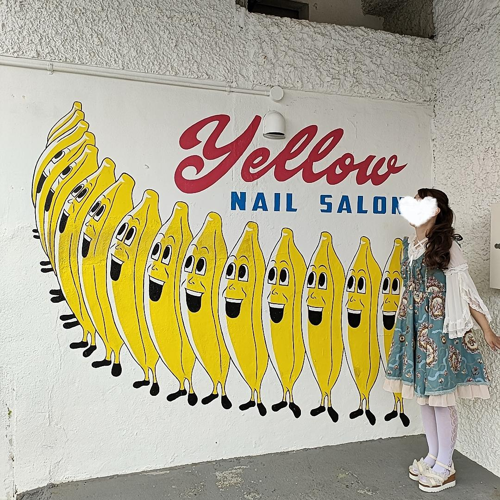

2024/05/17🌞
明日もお仕事なのだ！
今日も陸事で車検登録してきました！！
今日は軽自動車協会が混んでおり、確認することも3件あったので、
書類出しっぱなしで標板協会行ったり、県税事務所へ行ったりいすゞへ行ったり………♪
書類不備もなく、スムーズに5件登録できました✨
私、音楽が大好きで、車検登録の行き帰りに車内でカラオケ大会を繰り広げているのですが、
見事に事務員さんのTELに気づかずそのまま帰ってきちゃいました（てへっ
LINE電話の着信音小さくないですか？？？
自分の連絡先教えちゃいました！
これで爆音で着信音流れるので次は気付くといいな～💦
今日は帰宅前にジムでトレーニングしてきます！

写真はこの前ランチで行ったケソダイナーさんの入り口です！
可愛すぎて仲間になっちゃいました💕
顔はスタンプで隠してるからOKかな？